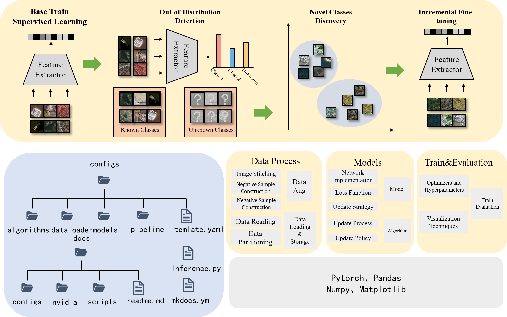

OpenHAIV Documentation
The framework adopts a modular design overall, which is reflected in two key aspects:
- Functionally, it independently incorporates dedicated modules for supervised training, out-of-distribution detection, novel class discovery, and incremental learning.
- Procedurally, the framework divides its operational workflow into distinct stages, including data processing, model construction, training \& evaluation, and visualization.
From an implementation perspective, the framework is built upon foundational deep learning, data processing, and visualization libraries such as PyTorch, NumPy, Matplotlib, and Pandas, leveraging their extensive built-in functionalities.
